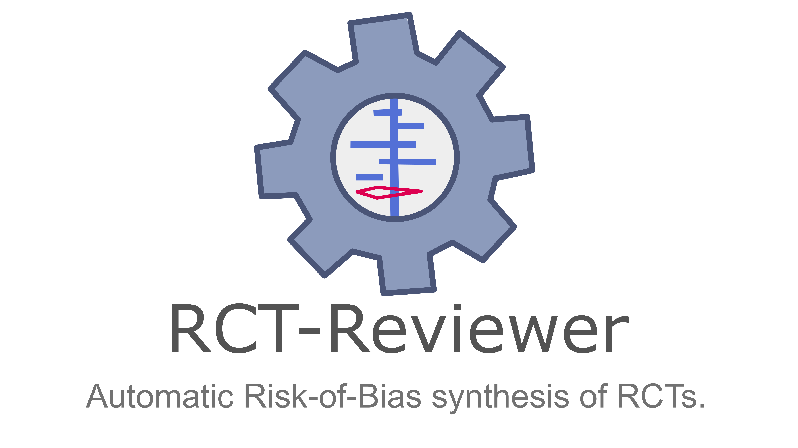
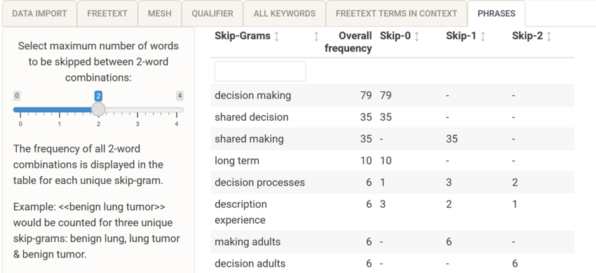
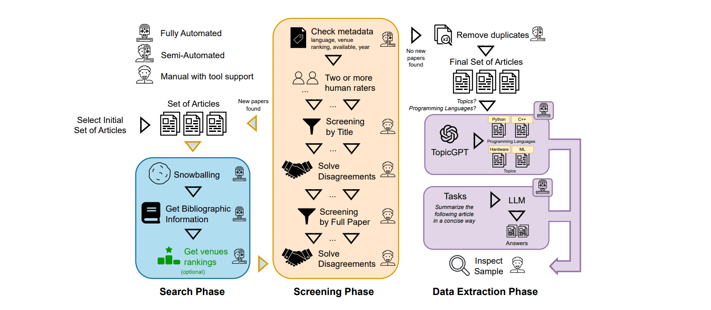
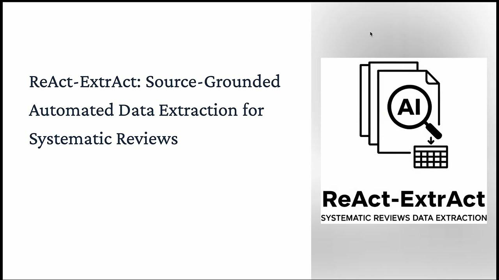
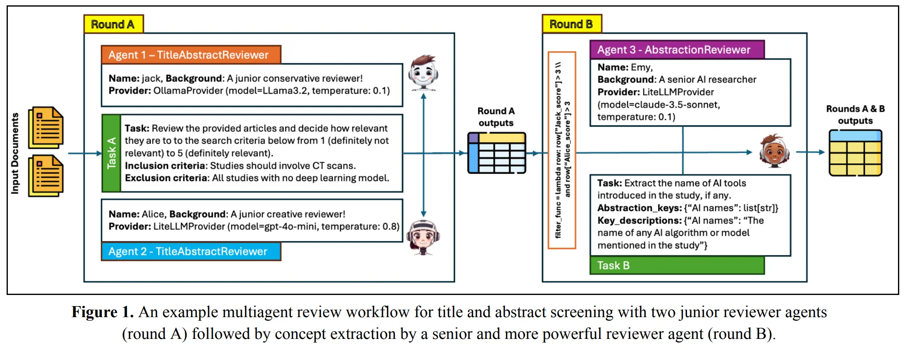
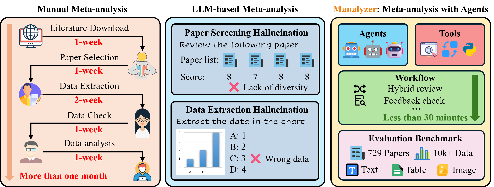
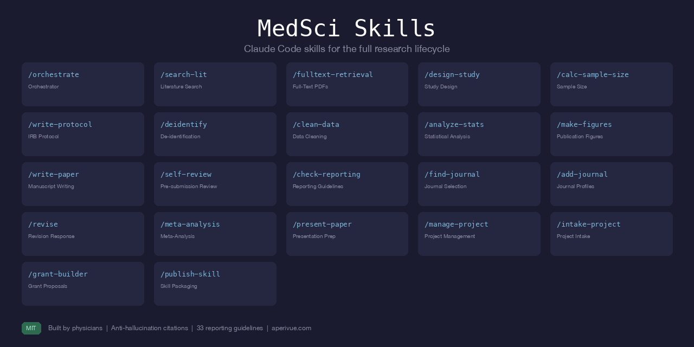

What is Evidence Synthesis?
Evidence Synthesis is the process of bringing together all available information relevant to a research question, to inform decisions and policy. It moves beyond simply summarizing single studies to generating robust, generalizable findings. This rigorous process involves systematic searching, critical appraisal, data extraction, and meta-analysis.
Directory Policy: This directory lists only Open Source, non-proprietary academic tools. The complete source code must be publicly available (e.g., on GitHub, GitLab, or similar platforms), allowing anyone to inspect, reuse, and build upon it. Proprietary or closed-source software (EndNote, Covidence, DistillerSR, NVivo, Stata, SAS, Rayyan, etc.) is strictly excluded. Checklists and Frameworks were also excluded.

Why Open Source? We prioritize open-source tools to ensure full transparency and reproducibility in research. Open-source software allows researchers to inspect the underlying code, avoiding reliance on proprietary "black box" algorithms. Furthermore, it fosters a collaborative ecosystem where researchers can directly fork, extend, and improve existing tools, accelerating innovation while ensuring long-term accessibility and independence from commercial vendors.
These range from AI-assisted screening platforms that help find relevant studies amidst thousands of papers, to Risk of Bias (RoB) visualization tools, to smaller scripts and libraries that automate specific tasks in the synthesis pipeline.
This directory specifically highlights 290 open source non properietary tools / softwares till early 2026.
Directory List

CitationChaser
Automates backward and forward citation chasing using Lens.org API to find cited and citing papers for systematic reviews.

litsearchr
An R package and Shiny app that uses text mining to identify important search terms, builds Boolean strings across databases, and test search performance.

OpenAlex
A fully open catalog of the global research system providing an API to retrieve millions of works, authors, and concepts for searching.

R: RISmed
R package for accessing data and downloading records from PubMed and NCBI databases programmatically.

R: easyPubMed
A wrapper for the NCBI Entrez API allowing users to query PubMed and parse XML results into R data frames.

PubTator 3.0
A web-based semantic annotation system for biomedical literature, automatically recognizing concepts like genes, diseases, and chemicals.

Unpaywall
An open-source browser extension and database that instantly finds free, legal full-text PDFs for your scholarly references.

R: openalex
An R interface to the OpenAlex API for accessing bibliographic data and concepts programmatically.

Systematic Review Accelerator 2 (SRA2)
The core Systematic Review Accelerator (SRA) application. This is a key open-source platform for evidence synthesis.

TERA Explorer
A simple TERA project viewer and editor. Confirms "TERA" as an active project name within the suite.

SRA Polyglot
A tool to convert between different medical database search formats, directly relevant to search strategy development.

BioTextQuest v2.0
An open-source web portal for biomedical literature mining. It clusters PubMed search results to facilitate concept discovery and identify associations between genes, diseases, chemicals, and other entities.

Kindred
A Python library for supervised relation extraction from biomedical text. It identifies structured relationships (e.g., gene-disease, drug-treatment) from scientific literature using machine learning.

Zotero
Free, open-source reference manager that helps collect, organize, cite, and share research sources. Highly extensible with plugins.

JabRef
Open-source bibliography reference manager. The native file format used is BibTeX, standard for LaTeX.

OpenRefine
A power tool for working with messy data, cleaning it, transforming it, and extending it with web services.

BiblioGlutton
An open-source browser extension that recommends papers and automatically adds references to your library.

Docear
An open-source academic literature suite based on mind mapping, helping to organize PDFs and annotations.

ZotFile
An open-source Zotero plugin to automatically rename and attach PDFs to your references.

BibDesk
An open-source graphical BibTeX editor and bibliography manager for macOS.

BibSonomy
An open-source social bookmarking and publication sharing platform for researchers.

Zotero Better BibTeX
A plugin for Zotero that automatically generates BibTeX keys and exports.

Papis
A powerful and highly extensible document and bibliography management system / library.

Manubot
Open-source software for creating scholarly manuscripts via YAML citations. Generates citations and formats using pandoc/citeproc.

Dedupe
A Python library for fast, scalable fuzzy matching and deduplication of records (e.g., citations).

ASReview
An open-source machine learning tool for systematic reviews that assists researchers in screening papers interactively and efficiently.

ReviewAid
ReviewAid is an AI-powered full-text research article screener and data extractor that streamlines systematic reviews by automating relevance screening and key data extraction in one easy-to-use web tool.

Abstrackr
A free, open-source web application designed to help researchers screen citations for systematic reviews using machine learning.

Colandr
An open-source web-based tool for systematic review workflows, from deduplication and screening to extraction and manuscript drafting.

R: revtools
A toolkit for systematic reviews in R, facilitating article screening via visual inspection and topic modeling of search results.

R: metagear
R package that provides tools for article deduplication, downloading PDFs, and interactive screening.

RobotReviewer
An open-source system that automates risk-of-bias assessment and data extraction for randomized controlled trials using NLP.

RCT-Reviewer
RCT-Reviewer is a modernized, standalone version of RobotReviewer, designed as a third-party reference tool for Risk of Bias assessment. It builds upon RobotReviewer's original machine learning models trained on 12,808 randomized controlled trials (RCTs).

Tabula
A tool for liberating data tables locked inside PDF files. It extracts tables into CSV or Excel formats to facilitate data extraction.

WebPlotDigitizer (v4)
An open-source, semi-automated tool to extract numeric data from plot images. It is useful for extracting data from graphs for meta-analysis.

GROBID
A machine learning library and tool for extracting structured information (bibliographic data, tables, headers) from scientific documents in PDF format.

OCRmyPDF
A command line tool that adds an OCR text layer to scanned PDF files, making them searchable and selectable for data extraction.

Tesseract OCR
The most popular open-source Optical Character Recognition (OCR) engine, used to extract text from images and scanned PDFs.

Pandoc
A universal document converter that turns files from one markup format into another (e.g., Word to Markdown), useful for document preparation.

Camelot
A Python library that helps you extract tables from PDFs, providing a command line interface and robust PDF table extraction capabilities.

PDFPlumber
A Python library to reliably extract text and tables from PDFs, even those with complex layouts, aiding in data extraction.

SciSpaCy
A Python library containing spaCy models for processing biomedical, scientific, or clinical text, ideal for extraction and NLP tasks.

Nougat
An open-source neural network model that converts scientific PDFs into Markdown, facilitating text and table extraction.

PDFtk (PDF Toolkit)
A tool for performing everyday tasks on PDF files, such as splitting, merging, and rotating pages, without editing the content.

PyPDF2
A pure-Python library built as a PDF toolkit, capable of extracting document information, splitting, merging, and cropping pages.

NLP Annotation
An open-source web-based tool for creating structured annotations on text, supporting entity, relation, and event labeling for NLP and biomedical text analysis.

ImageJ
A Java-based image processing program widely used to extract data points from raster plots and images.

Engauge Digitizer
Open source software for converting image files back to numbers, extracting data from graph images for analysis.

Recogito
An open-source web-based tool for collaborative document annotation and text mapping.

Hypothes.is
An open-source layer over the web for annotating documents, web pages, and PDFs collaboratively.

Critiplot
A specialized open-source tool for generating traffic light plots for MMAT, ROBIS, GRADE, NOS, JBI Case Series/report assessments.

robvis
An R package and web app for generating risk-of-bias assessment plots. It supports RoB2, ROBINS-I, QUADAS-2, and more.

NOS-TLPlot
Open-source tool designed to visualize Newcastle-Ottawa Scale (NOS) assessments using traffic light plots.

psychometric
R package for applied psychometric theory, offering functions for reliability analysis, validity, and item analysis.

metaviz
An R package for creating flexible visualizations for meta-analytic data, including rainforest plots and subgroup visualizations.

R: EValue
R package to calculate E-values, metrics to assess robustness to unmeasured confounding in meta-analyses. It provides functions for sensitivity analysis of unmeasured confounding for various effect measures including risk ratios and odds ratios.

psychmeta
R package for conducting psychometric meta-analyses, providing tools for artifact correction, data cleaning, and aggregation of validity coefficients.

statcheck
statcheck is an R package that extracts statistical results from text, PDF, or HTML and checks whether reported p-values are consistent with the given test statistics and degrees of freedom. It is used to detect statistical reporting inconsistencies in primary studies and meta-analyses.

R: syuzhet
Syuzhet is an R package designed to extract sentiment and sentiment-derived plot arcs from text using various sentiment dictionaries. It facilitates the analysis of narrative trajectories and emotional shifts within textual data.

R: metafor
A comprehensive R package for conducting meta-analyses, providing functions for fixed, random, and mixed-effects models, meta-regression, and multilevel models.

R: meta
A user-friendly R package for standard meta-analysis in clinical research, supporting binary, continuous, and diagnostic test accuracy data with various visualization tools.

R: netmeta
An R package for frequentist network meta-analysis using a graph-theoretical approach to estimate treatment effects and evaluate consistency within networks.

OpenMEE
An open-source, cross-platform software for meta-analysis in ecology and evolution, utilizing a graphical interface backed by the 'metafor' R engine.
![OpenMeta[Analyst]](softwares/openmetanalyst.png)
OpenMeta[Analyst] / Meta-Analyst
A user-friendly, open-source software for performing meta-analysis and meta-regression using a graphical interface.

JASP
Free and open-source software for statistical analysis, featuring a graphical interface with a dedicated module for conducting meta-analysis.

OpenEpi
A web-based, open-source set of epidemiologic calculators designed for statistics in descriptive and analytic studies. It provides tools for stratified analysis, sample size calculations, and R x C tables, which are useful for data extraction and statistical verification in reviews.

PyMC
A Python library for Bayesian statistical modeling and probabilistic machine learning focusing on Markov chain Monte Carlo (MCMC) algorithms. It is widely used in evidence synthesis to perform Bayesian network meta-analysis and complex hierarchical modeling.

JAGS
A program for analysis of Bayesian hierarchical models using Markov Chain Monte Carlo (MCMC) simulation. It provides a flexible platform for performing Bayesian network meta-analysis and other complex statistical tasks in evidence synthesis.

Stan
A state-of-the-art platform for statistical modeling and high-performance computation using Hamiltonian Monte Carlo (HMC). It is widely utilized in evidence synthesis for conducting Bayesian meta-analyses and network meta-analyses with complex models.

R: meta4diag
An R package specifically designed for the Bayesian meta-analysis of diagnostic test accuracy studies. It handles complex data structures, including correlated sensitivities and specificities, using Markov chain Monte Carlo simulation.

R: mada
An R package that provides functions for the meta-analysis of diagnostic accuracy data. It supports various statistical models for pooling sensitivity and specificity and offers extensive graphical capabilities for result visualization.

R: bmeta
An R package designed for conducting Bayesian meta-analysis and meta-regression using JAGS. It provides a flexible framework for various statistical models and generates graphical outputs for evidence synthesis.

R: MAc
An R package for the meta-analysis of correlation matrices, particularly useful in psychometrics and social sciences. It implements structural equation modeling approaches to synthesize correlation data accurately.

R: metaRNAseq
An R package for the meta-analysis of RNA-Seq count data, providing standardization for cross-study comparison of differential gene expression. It implements methods to combine effect sizes and p-values across multiple high-throughput sequencing studies.

R: metaMA
An R package dedicated to the meta-analysis of microarray data, combining p-values from multiple studies to identify differentially expressed genes. It handles cross-study variability and platform differences to provide robust gene lists.

R: metaSEM
An R package for conducting meta-analytic structural equation modeling (MASEM) to synthesize correlation or covariance matrices across studies. It allows researchers to fit structural equation models on pooled data to test theoretical models.

R: gemtc
An R package for network meta-analysis using a Bayesian graphical model framework, primarily interfacing with JAGS. It automates the data conversion, model fitting, and generation of network plots and rank probabilities.

R: multinma
An R package for network meta-analysis of randomized trials and observational studies, enabling the synthesis of multiple outcomes and treatments simultaneously. It utilizes Stan for Bayesian inference to fit complex hierarchical models.

R: dosresmeta
An R package for performing dose-response meta-analysis of aggregated data using a one-stage approach. It allows for the modeling of non-linear relationships between exposure levels and outcome effects.

R: MetaForest
An R package that applies Random Forests to meta-analytic data to explore heterogeneity and model complex, non-linear relationships. It helps identify influential covariates and interactions without strict linearity assumptions.

R: Bayesmeta
An R package for conducting Bayesian random-effects meta-analysis with a focus on robust parameter estimation and predictive inference. It provides functions for computing posterior distributions and generating plots.

R: metapower
An R package for power analysis in meta-analysis, helping researchers calculate the required number of studies or sample size to detect an effect. It supports various meta-analytic models and effect sizes.

R: metaumbrella
An R package specifically designed to perform "Umbrella Reviews," which are systematic reviews of multiple meta-analyses. It provides tools for classifying evidence, assessing bias, and visualizing results from large-scale evidence synthesis projects.

R: pimeta
An R package for calculating prediction intervals in meta-analysis, offering insights into the range of true effects in future studies. It implements various parametric and non-parametric methods for prediction interval estimation.

R: metaplus
An R package for random-effects meta-analysis that uses heavy-tailed distributions, such as the t-distribution, to handle outliers effectively. It provides robust estimates of the overall effect and between-study heterogeneity.
R: robustmeta
An R package that performs robust statistical inference in meta-analysis using methods like the RD (Robust DerSimonian-Laird) and REMLC estimators. It protects against violations of model assumptions, such as publication bias or small-study effects.

R: metamedian
An R package for performing median-based meta-analysis, providing robust alternatives to mean-based aggregation methods. It is particularly useful when dealing with skewed distributions or data where means are not representative.
R: metaLik
An R package that provides likelihood-based methods for conducting meta-analysis. It is particularly useful for diagnostic accuracy studies and offers robust estimation techniques.

R: brms
An interface to Stan for Bayesian regression models that allows users to fit complex multilevel models using R formula syntax. It is extensively used for performing Bayesian meta-analysis and network meta-analysis with flexible model specifications.

R: R2OpenBUGS
An R package that acts as an interface to the OpenBUGS software, enabling users to run Bayesian models directly from the R console. It facilitates the workflow for Bayesian meta-analysis by linking R data management with OpenBUGS sampling.

BUGSnet
A web-based platform for conducting Network Meta-Analysis (NMA) using OpenBUGS, designed to be user-friendly for researchers without programming expertise. It provides visualization tools for network geometry and generates publication-ready plots and tables.

R: robumeta
An R package for conducting robust variance estimation (RVE) in meta-analysis, which is essential for handling dependent effect sizes. It implements models that adjust for correlated errors often found in hierarchical or longitudinal data structures.

R: dmetar
A comprehensive R package to assist in conducting meta-analyses, providing helper functions for data preparation, effect size calculation, and bias assessment. It serves as a companion to the guide 'Doing Meta-Analysis in R'.

MAvis
An interactive Shiny application designed for visualizing meta-analysis data, including forest plots, funnel plots, and L'Abbe plots. It allows users to upload data and generate standard publication-quality plots dynamically.

ShinyMeta
A Shiny web application that provides a graphical user interface for performing meta-analysis and meta-regression using the 'metafor' package as a computational backend. It enables users to conduct analyses without writing R code.

compute.es
R package for computing effect sizes (d, g, r, log odds ratio) and their variances from various test statistics. It facilitates the conversion of reported statistics into formats required for meta-analysis.

VOSviewer
A software tool for constructing and visualizing bibliometric networks. Useful for evidence mapping and co-citation analysis.

PRISMA 2020 (Flow Diagram)
The official PRISMA 2020 Flow Diagram Generator (Shiny App & R package) automatically creates a correctly formatted PRISMA flow diagram after you input your study screening numbers.

RawGraphs
An open-source platform built to create custom vector-based visualizations on top of the D3.js library. It allows users to define layouts, mappings, and visual styles without coding, serving as a bridge between spreadsheets and vector graphics editors for data analysis.

EviAtlas
A tool for creating systematic map visualizations to organize and display the distribution of evidence in a specific field. It connects to an Excel database to generate heatmaps and other graphical representations of evidence.

bibliometrix
A comprehensive tool for quantitative research in bibliometrics and scientometrics, providing all the main tools for bibliometric analysis. It includes an interactive web application called biblioshiny for performing science mapping analysis.

Gephi
An open-source platform for visualizing and exploring large networks and graphs. It is widely used in evidence synthesis for network analysis, science mapping, and exploring complex data structures.

Cytoscape
An open source software platform for visualizing complex networks and integrating these with any type of attribute data. While often used in bioinformatics, it is applicable for visualizing citation networks and evidence connections in systematic reviews.

QGIS
A free and open-source Geographic Information System (GIS) that supports creating, editing, visualizing, analyzing, and publishing geospatial information. It is a critical tool for evidence synthesis projects involving systematic mapping and spatial analysis.

R: wordcloud
An R package that provides a simple interface for creating word clouds. It is useful for visualizing text data frequency, aiding in the analysis of keywords and terms during the screening or extraction phases.

R: ggraph
An R package extending the grammar of graphics to graph data, built on top of ggplot2. It allows for the flexible creation of network visualizations, which can be used to map citation relationships in evidence synthesis.

R: ggplot2
The foundational R package for declaratively creating graphics based on The Grammar of Graphics. It is widely used to produce complex visualizations such as forest plots and funnel plots for meta-analysis.

R: patchwork
An R package that provides a simple syntax for combining separate ggplot2 graphics into the same figure. It is particularly useful for creating multi-panel visualizations, such as side-by-side forest plots or diagnostic plots in meta-analysis.

R: cowplot
An R package that provides themes and utilities to create publication-ready figures using ggplot2. It helps combine multiple plots into a composite figure and add annotations, streamlining the production of complex charts for systematic reviews.

Graphviz
Open-source graph visualization software that represents structural information as diagrams of abstract graphs and networks. It is useful for generating flow diagrams (like PRISMA flows) and visualizing citation networks in evidence synthesis.

Carrot2
An open-source search results clustering engine that automatically organizes search results into thematic categories. It helps researchers refine search queries and identify relevant literature clusters by structuring unstructured data.

Sci2
A modular toolset designed for the study of science, enabling temporal, geospatial, and topological analyses of scholarly datasets. It supports science mapping and bibliometric analysis to visualize the structure and evolution of scientific fields.

PyMedTermino
A Python library designed to manipulate the MeSH (Medical Subject Headings) thesaurus for biomedical search strategies. It facilitates the programmatic creation and management of complex search strings for literature databases.

BioEntrez
A module within the Biopython library that provides a programmatic interface to the NCBI Entrez utilities. It is essential for automating searches and retrieving data from PubMed and other NCBI databases.

R: RTextTools
An R package for automatic text classification that creates machine learning models for supervised learning. It is useful for screening automation, allowing researchers to train classifiers to prioritize relevant documents.

ArviZ
A Python library for exploratory analysis of Bayesian models, providing backend-agnostic plotting and diagnostics. It supports the visualization and interpretation of results from Bayesian meta-analyses conducted with PyMC, Stan, or other probabilistic programming frameworks.

R: forestplot
An R package specifically designed for creating forest plots, which are standard visualizations in meta-analysis for displaying effect sizes and confidence intervals. It provides a flexible syntax to generate summaries and confidence intervals from tabular data.

R: clubSandwich
An R package providing cluster-robust variance estimators for models involving dependent effect sizes, such as multilevel or network meta-analysis. It is essential for ensuring valid statistical inference when data is correlated.

R: MICE
Multivariate Imputation by Chained Equations (MICE) is an R package used for handling missing data through multiple imputation. It allows researchers to perform robust statistical analyses on incomplete datasets commonly encountered in evidence synthesis.

PSPP
A free, open-source replacement for the proprietary program SPSS, offering a similar interface and statistical capabilities. It performs descriptive statistics and basic hypothesis testing, useful for analyzing extracted data in systematic reviews.

Gretl
GNU Regression, Econometrics and Time-series Library is an open-source package for econometric analysis. It supports a wide range of estimators and is useful for complex statistical modeling and time-series analysis within research projects.

OSF (Open Science Framework)
An open-source project management tool supporting the full research lifecycle, from preregistration to data sharing and collaboration. It helps research teams manage workflows, document decisions, and archive materials for systematic reviews.

spacy
Industrial-strength Natural Language Processing (NLP) library for Python, designed specifically for production use. It provides pre-trained models for named entity recognition, part-of-speech tagging, and dependency parsing, useful for data extraction and screening automation.

R: tidytext
An R package for text mining using 'tidy data' principles, allowing seamless integration with the 'tidyverse' ecosystem. It is essential for performing sentiment analysis, term frequency analysis, and visualizing text data during the screening process.

R: quanteda
A comprehensive R package for the quantitative analysis of textual data, speeding up the workflow for creating and managing corpora. It supports various text analysis techniques including scaling and feature extraction relevant to systematic review screening.

R: topicmodels
An R package that provides an interface to the C code for Latent Dirichlet Allocation (LDA) and Correlated Topic Models (CTM). It is useful for identifying latent topics and themes within large sets of abstracts or full-text documents.

R: snowballC
An R package for text stemming, which reduces words to their root form to improve matching during text analysis. It is a fundamental tool for preprocessing text data in search term development and screening.

R: udpipe
An R package for fast text tokenization, parts of speech tagging, lemmatization, and dependency parsing. It provides pre-trained models for multiple languages, facilitating text preprocessing for systematic reviews.

Citation.js
An open-source JavaScript library for formatting citations in CSL-JSON and converting them to various bibliographic styles. It is useful for developers building web-based tools that require citation processing.

scikit-learn
Python's premier machine learning library, featuring simple and efficient tools for predictive data analysis and mining. It is widely used to build custom classification models to automate the screening process in systematic reviews.

transformers
A library by Hugging Face providing thousands of pre-trained models for text, image, and audio tasks. It enables researchers to use state-of-the-art NLP models like BERT for advanced screening and data extraction.

R: R Markdown
A framework for creating dynamic documents that turn analysis code into fully reproducible reports. It is essential for transparently documenting the data extraction and analysis phases of evidence synthesis.

R: bookdown
An R package that allows authors to write books and long-form reports using R Markdown. It facilitates the creation of comprehensive systematic reviews and reproducible research documents.

PDFMiner.six
A Python library for extracting information from PDF documents, including text, images, and metadata. It is essential for parsing full-text reports during the data extraction phase.

Gensim
A Python library for topic modeling, document indexing, and similarity retrieval with large corpora. It provides efficient algorithms for analyzing textual data to identify themes during screening.

Whoosh
A fast, pure Python search engine library. It is useful for building custom local search indices of downloaded PDF libraries to enable rapid full-text searching.

GPT-Researcher
An open-source autonomous agent that conducts comprehensive research on any topic by aggregating online sources. It produces detailed, cited research reports, assisting in the initial scoping and synthesis of information.

Taguette
An open-source qualitative analysis tool that supports code-and-retrieval methods using simple text files. It allows researchers to upload documents, highlight and tag text segments, and export qualitative data.

QualCoder
A fully open-source qualitative analysis tool for text, audio, video, and images, providing advanced coding and analysis features. It supports team collaboration, memoing, and reporting for qualitative evidence synthesis.

R: RQDA
An R package for Qualitative Data Analysis that assists in managing qualitative data, coding, and analyzing text. It provides a graphical interface within R to support rigorous qualitative research workflows.

CATMA
Computer Assisted Text Markup & Analysis is a Java-based open-source tool for collaborative text analysis and annotation. It allows users to create, share, and analyze annotations on textual data for qualitative synthesis.

ROSES flowchart
An R package and Shiny app for creating flow diagrams compliant with the ROSES (Reporting Standards for Systematic Evidence Syntheses) guidelines. It supports the visualization of systematic review and map processes.

RefRandomiser
A Python-based data splitting tool developed to support double-screening processes in evidence synthesis. It helps randomize references for screening to improve reliability and validation.

bibfix
An R package and Shiny app that assists users in repairing and enriching bibliographic data using the OpenAlex API. It fixes common formatting errors in reference lists to prepare data for synthesis.

greylitsearcher
An R package and Shiny app for performing systematic and transparent searches of organizational websites using Google's site search functionality. It facilitates structured searches across website pages.

metadat
An R package containing a large collection of meta-analysis datasets useful for teaching and testing methods. It provides standardized data for validating meta-analytic analyses.

PredicTER
A Shiny app that predicts the time required to conduct systematic reviews and maps. It helps researchers plan their projects by estimating the hours needed for various stages.

sysrevdata
An R package designed to convert systematic review and map databases into human- and machine-readable formats. It aids in the translation of complex data structures for visualization and analysis.

Thallo Evidence Mapping
A Jekyll theme and framework providing map components for the web visualization of environmental evidence maps. It features visual clustering, filtering, and slicing of data dimensions.

CiteSource
An R package and Shiny application designed to analyze the utility of information sources and retrieval methodologies for evidence synthesis. It helps researchers test and compare the effectiveness of different search strategies.

metaverse
A meta-project that integrates and expands the number and utility of R functions for systematic review and meta-analysis. It provides a comprehensive workflow environment by bundling packages for search, screening, data extraction, and visualization.

synthesisr
An R package that assists with the import, assembly, and de-duplication of bibliographic data for evidence synthesis projects. It streamlines the management of search results from multiple databases.

metaDigitise
An R package for high-throughput, reproducible extraction of data from published figures. It allows users to digitize plots and extract numerical data for meta-analysis efficiently.

Entrez Direct
A set of command-line utilities for accessing the NCBI Entrez databases. It allows for powerful, scriptable PubMed searches and data retrieval within the terminal.

Rentrez
An R package providing an R interface to the NCBI E-utilities API. It enables users to search PubMed, download records, and fetch linked data programmatically.

Science Parse
A machine learning library (Scala/Java) for parsing scientific papers. It extracts metadata, references, and header structures from PDFs to aid in data extraction.

AnyStyle
A parser (Ruby-based) that uses machine learning to extract structured citation data from messy text strings, useful for cleaning reference lists.

Plot Digitizer
A Java-based tool used to digitize scanned plots of functional data. It extracts data points from images, allowing reviewers to recover numerical data from graphs.

KBibTeX
A BibTeX editor for the KDE desktop environment. It provides a comfortable interface to manage bibliographic databases and is a great open-source alternative for Linux users.

Wikindx
An online bibliographic management and article authoring system designed for single or multi-user collaboration. It runs on a server and supports citation formatting.

MetaInsight
A web-based tool that conducts network meta-analysis (NMA) via the web. It provides an intuitive interface and interactive visualizations, leveraging R routines.

PyMARE
A Python library designed to perform meta-analysis tasks, including combining effect measures, heterogeneity testing, subgroup analysis, and generating forest plots.

Jamovi
A free, open-source statistical spreadsheet designed to be easy to use. It is a compelling alternative to SPSS and includes modules for meta-analysis.

Meta-CART
An R package and tool to identify interactions between moderators in meta-analysis using Classification and Regression Trees (CART) followed by subgroup analysis.

MetaWin
MetaWin is a statistical software package designed for conducting meta-analysis and resampling statistics in ecology and evolutionary biology. It provides a user-friendly interface for calculating effect sizes and generating forest plots.

Meta-DiSc
Meta-DiSc is a free software tool used for the meta-analysis of diagnostic test accuracy studies. It allows users to perform statistical analyses, including bivariate models, and visualize results using SROC curves.

SyRF
The CAMARADES Systematic Review Facility (SyRF) is an open-source platform designed specifically for preclinical systematic reviews. It facilitates project management, data extraction, and meta-analysis for animal studies.

MetaDTA
MetaDTA is a web-based interactive tool for performing meta-analysis of diagnostic test accuracy studies. It simplifies the implementation of complex bivariate hierarchical models, making them accessible without advanced statistical programming.

DiagMeta
DiagMeta is an R package used for the meta-analysis of diagnostic accuracy studies where multiple thresholds are reported. It estimates the summary ROC curve by modeling the sensitivity and specificity across different cut-off points.

HSROC
HSROC is an R package that implements the Hierarchical Summary ROC model for diagnostic test accuracy meta-analysis within a Bayesian framework. It allows users to estimate summary points, prediction regions, and SROC curves.
Metatron
Metatron is an R package for the meta-analysis of classification data that corrects for the bias of an imperfect reference standard. It is particularly useful in scenarios where the gold standard diagnostic test is unavailable or flawed.

Kilim Plot / Vitruvian Plot
The Kilim plot is a graphical tool for visualizing network meta-analysis results for multiple outcomes. It compactly summarizes absolute treatment effects and the strength of evidence across networks.
bamdit
bamdit is an R package for Bayesian meta-analysis of diagnostic test data. It simplifies the implementation of hierarchical models using JAGS and includes tools for conflict of evidence analysis.

pcnetmeta
pcnetmeta is an R package that performs arm-based network meta-analysis using Bayesian hierarchical models via JAGS. It supports binary, continuous, and count outcomes, providing treatment ranking and network diagnostics.
mmeta
mmeta is an R package for multivariate meta-analysis of 2×2 tables using Bayesian exact posterior inference. It supports correlated risks within studies and provides inference for odds ratios, relative risks, and risk differences.

bspmma
bspmma is an R package for Bayesian semiparametric random-effects meta-analysis using Dirichlet process priors. It supports non-normal effect distributions, provides posterior summaries, and includes functions for Bayes factors.
RIMeta
RIMeta is an R Shiny application for estimating reference intervals from a meta-analysis using aggregate summary statistics. It implements fixed effects and random effects models to derive reference intervals and visualize the results.

MA-cont
MA-cont is an R Shiny application for meta-analysis of continuous outcomes with pre- and post-intervention measurements. It supports standard aggregate-data and pseudo individual patient data approaches, including ANCOVA-based methods.

MBNMAdose
MBNMAdose is an R package for Model-Based Network Meta-Analysis (MBNMA) that allows researchers to integrate complex dose-response information into a single cohesive framework. It acts as an interface for JAGS to perform Bayesian MCMC simulations for dose-response network meta-analysis.

DenseReviewer
DenseReviewer is a Python-based tool designed to accelerate the screening phase of systematic reviews by using Dense Retrieval models to rank relevant studies. It incorporates active learning to refine rankings and reduce manual screening workload.

ASySD
ASySD (Automated Systematic Search Deduplication) is a web application designed to de-duplicate large search results from multiple databases for systematic reviews. It guides users through a step-by-step process to identify and remove duplicate records efficiently.

RobotSearch
RobotSearch is a machine learning tool designed to filter out articles that do not describe randomized controlled trials (RCTs) from search results. Users upload an RIS file, and the model predicts the probability of articles being RCTs to streamline screening.
Thoth
Thoth is a web-based support tool developed to assist with the systematic literature review process, particularly in software engineering. It supports protocol definition, study selection, and data extraction to help manage the review lifecycle.

Paperfetcher
Automates handsearching and citation searching for systematic reviews using Crossref and COCI databases. It enables one-click snowballing and exports data in RIS format for integration with screening tools.

PubMed Search Tester
A web-based tool designed to help librarians and researchers construct and validate PubMed search queries in real-time. It allows users to test search syntax and retrieval efficiency directly in the browser.
metapro
An R package that implements powerful p-value combination methods to detect incomplete association in meta-analyses, increasing statistical power by combining statistics from multiple studies.

SurvdigitizeR
An R package and Shiny application algorithm for automated survival curve digitization, effectively digitizing KM curves with accuracy comparable to conventional manual digitization.

CINeMA
Software for semiautomated assessment of the confidence in the results of network meta-analysis, guiding users through the process of evaluating confidence in evidence.

HAWC
An open-source content management system used to guarantee transparency in systematic reviews, managing the review process and documentation.

metacp
A versatile software package that implements statistical methods for the combination of both independent p-values (e.g., Fisher's) and dependent p-values.

searchbuildR
A Shiny R app providing a new implementation of the objective approach for search strategy development in systematic reviews, usable without extensive programming skills.

MSE FINDR
A Shiny R application to estimate Mean Square Error using treatment means and post hoc test results, facilitating research synthesis methods like meta-analysis.
Auto-STEED
A data mining tool for automated extraction of experimental parameters and risk of bias items from in vivo publications to assist systematic reviews.
Trial2rev
A system combining machine learning and crowd-sourcing to create a shared space for updating systematic reviews, with code available on GitHub under an open source license.

metap
Functions for combining p-values (significance values) from studies, providing methods for meta-analysis when effect sizes are not available.

RTSA
Trial Sequential Analysis for error control, allowing for the calculation of group sequential designs for meta-analysis to control for type I and II errors.
mixmeta
An extended mixed-effects framework for multivariate and longitudinal meta-analysis and meta-regression, handling complex dependency structures.

rnmamod
Bayesian network meta-analysis with missing data, running models using JAGS and checking response consistency.

baggr
Bayesian meta-analysis of aggregated data using Stan, supporting various models including hierarchical and potential outcomes.

esc
Effect size computation for meta-analysis, calculating a wide range of effect sizes from various test statistics and data formats.

metaBMA
Bayesian model averaging for random and fixed effects meta-analysis, allowing for the comparison of different meta-analytic models.

metasens
Statistical methods for sensitivity analysis in meta-analysis, evaluating how sensitive results are to publication bias.

bipd
Bayesian Individual Patient Data Meta-Analysis using 'JAGS', facilitating the synthesis of IPD in a Bayesian framework.

MetaStan
Bayesian meta-analysis via 'Stan', fitting several models including binomial-normal hierarchical models.
MAd
Meta-analysis with mean differences, conducting meta-analysis using standardized mean differences and assuming correlated effect sizes.
CaMeA
Causal meta-analysis for aggregated data, implementing aggregation formulas and inference methods proposed by Berenfeld et al.
mvtmeta
Multivariate meta-analysis, designed for modeling multiple outcomes simultaneously using multivariate normal distributions.
mc.heterogeneity
A Monte Carlo based test for between-study heterogeneity in meta-analysis of standardized mean differences.

searchAnalyzeR
Enables analysis of PubMed search results for systematic reviews, including term effectiveness analysis and PRISMA diagram generation.

jarbes
Joint analysis of rare binary events in multi-arm trials using Bayesian evidence synthesis.
SCMA
Single-case meta-analysis, designed for synthesizing single-subject experimental design data.

rmeta
Functions for simple fixed and random effects meta-analysis for two-sample comparisons and cumulative meta-analyses.
MVPBT
Publication bias tests for meta-analysis of diagnostic accuracy tests using generalized Egger tests.

meta-maive
Meta-analysis instrumental variable estimator, addressing spurious precision in meta-analysis of observational research.
puniform
Meta-analysis methods correcting for publication bias, including the p-uniform method and a visual tool.

bnma
Bayesian network meta-analysis using JAGS, providing tools for network meta-analysis of binary and continuous outcomes.
survNMA
Network meta-analysis combining survival and count outcomes, analyzing time-to-event data in a network.

viscomp
Visualization tools for exploring multi-component interventions in network meta-analysis.
artma
Automatic replication tools for meta-analysis, facilitating the reproduction of meta-analytic findings.
dmetatools
Computational tools for meta-analysis of diagnostic test accuracy studies, handling non-standard metrics.

wildmeta
Cluster wild bootstrapping for meta-analysis, providing hypothesis testing methods for dependent effect sizes.

mvmeta
Multivariate and univariate meta-analysis and meta-regression, designed for modeling multiple outcomes simultaneously.
mars
Meta analysis and research synthesis tools for univariate and multivariate meta-analysis.

PINMA
Improved methods to construct prediction intervals for network meta-analysis.
NMADTA
Network meta-analysis of multiple diagnostic test accuracy studies (1-5 tests) with missing data.

coefa
Meta analysis of factor analysis based on co-occurrence matrices.

appraise
Bias-aware evidence synthesis in systematic reviews, implementing a bias-aware framework.

metarep
Replicability-analysis tools for meta-analysis, assessing the replicability of findings.
metaquant
Meta-analysis of quantiles and functions thereof using generalized linear distributions.
heterometa
Convert various meta-analysis heterogeneity measures, facilitating the comparison and reporting of heterogeneity.

getspres
SPRE statistics for exploring heterogeneity in meta-analysis, calculating precision-weighted residuals.

rema
Rare event meta-analysis, implementing a permutation-based approach to handle rare event data.
vcmeta
Varying coefficient meta-analysis methods, not assuming effect size homogeneity.

crossnma
Cross-design & cross-format network meta-analysis, synthesizing evidence from randomized and non-randomized studies.

metapack
Bayesian meta-analysis and network meta-analysis.

nmarank
Complex hierarchy questions in network meta-analysis, providing treatment rankings.

CBnetworkMA
Contrast-based Bayesian network meta-analysis, fitting NMA models using a contrast-based approach.
pema
Penalized meta-analysis, using penalization techniques to select moderators in meta-regression models.
altmeta
Alternative meta-analysis methods, including bivariate generalized linear mixed models.

boutliers
Outlier detection and influence diagnostics for meta-analysis.

metagroup
Meaningful grouping of studies in meta-analysis, performing subgroup analysis.

nmaplateplot
The plate plot for network meta-analysis, a graphical display of treatment effects.
selectMeta
Estimation of weight functions in meta-analysis to account for publication bias.
nmaINLA
Network meta-analysis using integrated nested Laplace approximations.
MetaNLP
Natural language processing for meta-analysis, processing titles and abstracts for data extraction.
POMADE
Power for meta-analysis of dependent effects.

publipha
Bayesian meta-analysis with publication bias, using selection models.

OssaNMA
Optimal sample size and allocation with a network meta-analysis.
metabup
Bayesian meta-analysis using basic uncertain priors.

rankinma
Rank in network meta-analysis, gathering and plotting treatment ranking metrics.

RBesT
R Bayesian evidence synthesis tools, facilitating the derivation of robust priors and meta-analyses.

detectnorm
Detect non-normality in meta-analysis without raw data, assessing distributional assumptions.

multibiasmeta
Meta-analysis for within-study and/or across-study biases, providing sensitivity analysis.

getmstatistic
SPRE statistics for exploring heterogeneity in meta-analysis, quantifying systematic heterogeneity.

NMAforest
Provides customized forest plots for network meta-analysis, visualizing direct, indirect, and NMA effects.

MBNMAtime
Run time-course model-based network meta-analysis for longitudinal data.

tracenma
Tools to trace network meta-analysis results across systematic reviews.

metasplines
Pool meta-analysis estimates and estimates from a regression model using splines.

metagam
Meta-analysis of generalized additive models, allowing for pooling of non-linear trends.
metansue
Meta-analysis of studies with non-statistically significant unreported effects, using multiple imputation.

RoBMA
Robust Bayesian meta-analysis using model-averaging to adjust for publication bias.

MetaAnalyser
An interactive application to visualize meta-analysis data as a physical weighing machine.
WMAP
Weighted meta-analysis with pseudo-populations, using integrative weighting approaches.
HCT
Calculates significance criteria and power for a new study based on meta-analysis.

CRTSize
Sample size estimation functions for cluster randomized trials, incorporating meta-analysis variance reduction.

MCMCglmm
MCMC generalized linear mixed models, capable of conducting meta-analysis using Bayesian methods.
iSFun
Inclusive summary function tools for meta-analysis.

LitOrganizer
LitOrganizer automates the process of data extraction and organization for scientific literature reviews. It is a local tool intended to run without a frontend to streamline the management of research data.

PROMPTHEUS
PROMPTHEUS is a human-centered pipeline designed to streamline Systematic Literature Reviews using Large Language Models. It operates locally without a frontend to support researchers in processing literature efficiently.
LLAssist
LLAssist provides simple tools for automating literature reviews by leveraging Large Language Models and Natural Language Processing. It extracts information from articles and evaluates their relevance to user-defined research questions.
EvidenceSynthesis
This R package contains routines for combining causal effect estimates and study diagnostics across multiple data sites in a distributed study. It includes functions for performing meta-analysis and generating forest plots to visualize results.

Scholarly
A Python library that retrieves data from Google Scholar by scraping citation counts and metadata. It serves as a standard open-source method for programmatic access to Google Scholar data for citation searching.

europepmc
An R package to retrieve metadata and full text from the Europe PMC database. It is a crucial resource for accessing biomedical and life sciences literature, including open-access content and grant information.

QuickUMLS
A fast, unsupervised approach for extracting concepts from biomedical text and mapping them to UMLS concepts. It is significantly faster than MetaMap and is widely used in clinical NLP pipelines for systematic reviews.

SciPDF Parser
A Python library designed to parse scientific PDFs to extract metadata, sections, references, and tables. It is particularly useful for building custom data extraction pipelines where heavier tools might be too complex.

Open Knowledge Maps
An open-source visual discovery tool that creates a "knowledge map" of a research topic by clustering top papers. The underlying engine (Headstart) can be self-hosted to visualize search results and research landscapes.

CorTexT Manager
A platform for analyzing and visualizing large textual corpora, particularly strong in bibliometric analysis and network visualization. It offers a robust alternative for large-scale text mining and mapping.

pybliometrics
pybliometrics is an open-source Python interface for retrieving and analyzing bibliometric data from the Scopus APIs. It provides programmatic access to publication metadata, author profiles, citation counts, and affiliation information, enabling automated literature retrieval and bibliometric analysis workflows useful for evidence synthesis.

rcrossref
rcrossref is an open-source R client for interacting with the Crossref REST API to retrieve scholarly metadata. It allows programmatic querying of DOI records, references, citation metadata, and publication details, supporting automated literature retrieval and citation analysis workflows.

metapsyTools
metapsyTools is an open-source R package that provides tools for preparing and analyzing meta-analytic datasets from the Metapsy psychotherapy databases or similarly structured datasets. It supports effect size calculation, dataset filtering, meta-analysis execution, publication bias correction, and automated reporting workflows for meta-analysis projects.

rayyanR
rayyanR is an R package designed to process screening decisions exported from the Rayyan systematic review platform. It retrieves review results through the Rayyan API and structures them into data frames for further analysis, including integration with PRISMA 2020 flow diagrams. The tool supports combining record and full-text screening stages and enables downstream evidence synthesis workflows within R.
prismAId
prismAId is an open-source toolkit designed to support systematic literature reviews using generative AI for structured information extraction. It enables protocol-based, reproducible data extraction from scientific texts and outputs structured datasets (e.g., CSV/JSON) for downstream analysis. The tool supports multiple programming environments and integrates with external AI providers while maintaining transparent, reusable workflows.
flowchart
flowchart is an open-source R package designed to create flow diagrams, particularly useful for visualizing study selection processes such as PRISMA diagrams in systematic reviews. It integrates with R workflows, enabling reproducible and customizable diagram generation directly from data. The package supports transparent reporting and automation within evidence synthesis pipelines.

ProfOlaf
ProfOlaf is an open-source semi-automated tool designed to support systematic literature reviews by assisting in study selection and organization. It integrates automation techniques to streamline screening and review workflows while maintaining transparency. The tool is built for extensibility and reproducibility in evidence synthesis pipelines.

ReAct-ExtrAct
ReAct-ExtrAct is an open-source tool for automated, source-grounded data extraction in systematic reviews. It leverages large language models with reasoning and action (ReAct) paradigms to extract structured data from scientific literature. The system is designed to improve reproducibility and transparency in evidence extraction workflows.

LitLLMs
LitLLMs is an open-source framework for applying large language models to literature review tasks, including summarization, retrieval, and synthesis. It provides tools and evaluation pipelines to assess how well LLMs support evidence synthesis workflows. The project emphasizes reproducibility and extensibility for research use.

LatteReview
LatteReview is an open-source multi-agent framework designed to automate systematic review workflows using large language models. It coordinates multiple agents to perform tasks such as screening, summarization, and synthesis. The system focuses on modularity and reproducibility in evidence synthesis automation.

Manalyzer
Manalyzer is an open-source end-to-end automated meta-analysis system that uses a multi-agent architecture to conduct statistical synthesis. It supports tasks such as data aggregation, analysis, and result generation within systematic reviews. The framework is designed for extensibility and reproducible meta-analysis workflows.
citracer
citracer is an open-source Python tool that traces citation chains from a seed paper using keyword or semantic matching. It parses PDFs, identifies relevant citation contexts, and builds interactive citation graphs for evidence synthesis and bibliometric analysis.

MedSci Skills
MedSci Skills is an open-source Claude Code agent-skill suite designed for the medical research lifecycle. It offers 42 skills covering the entire research process from topic discovery to journal submission, with specialized capabilities for evidence synthesis including meta-analysis, risk of bias assessment (PRISMA, STARD, QUADAS-2, ROBINS-I), and PRISMA flow diagram generation.